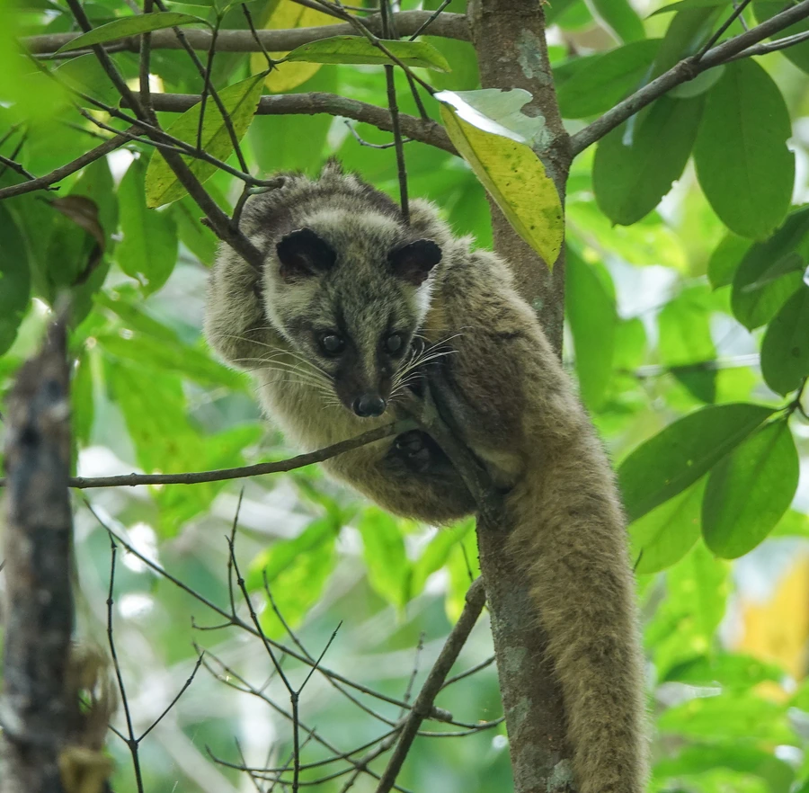

哺乳动物 · 动物界
果子狸 Paguma larvata

亚洲南部的灵猫科动物，面部有白色纵纹如花面，善攀爬，以果实为主食，也吃昆虫和小型动物，夜行独居。
- 分类
- 门脊索动物门纲哺乳纲目食肉目科灵猫科属花面狸属
- 栖息环境
- 森林、灌丛与农田边缘，善攀爬
- 地理分布
- 中国南方、印度东北部及东南亚的森林与林缘
- 保护级别
- IUCN 无危（LC）；中国“三有”保护动物
物种志
果子狸体长 0.5–0.75 米，尾长 0.5–0.6 米，体重 3–7 kg。它的体形细长，被毛为灰褐至黄褐色，面部有一条从鼻端延伸到额部的白色纵纹，眼周有黑色斑块，因此得名“花面狸”；四肢短，爪可伸缩，尾巴长而蓬松。
果子狸分布于中国南方、印度东北部、东南亚的森林、灌丛和农田边缘，适应力强。它是杂食动物，以果实为主，也吃树叶、昆虫、鸟卵、蛙类和小型兽类，善攀爬，常在树上取食果实。果子狸多在夜间单独活动，白天在树洞或岩缝中休息，领地以气味标记。雌性妊娠期约 60–70 天，每胎 2–4 仔。果子狸在人工饲养下较为常见，但其野生种群仍受捕猎影响；目前被列为无危，中国将其列入“三有”保护动物名录。
形态与习性
- 食性果实为主，也吃树叶、昆虫、鸟卵、蛙类与小型兽类
- 体长0.5–0.75 m，尾长 0.5–0.6 m
- 体重3–7 kg
- 寿命野外约 10–15 年
- 繁殖妊娠期约 60–70 天，每胎 2–4 仔
- 活动节律夜间单独活动
- 外貌面部有白色纵纹，眼周有黑色斑块
趣味知识
- 果子狸面部有一条白色纵纹，眼周黑色斑块像戴着面具。
- 它以果实为主食，也吃昆虫、鸟卵和小型动物。
- 果子狸善攀爬，常在树上取食果实。
- 中国将果子狸列入“三有”保护动物名录。